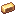
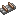

Технологии
Дерево технологий — отдельная ветка навыков (Открыть дерево навыков, вкладка «Технологии»). Очки в неё дают вехи: первый раз взял в инвентарь ключевой предмет — получил очки. Узлы стоят очков; всего можно потратить не больше 200. Вех сейчас 45, они дают 54 очка.
Что закрыто узлами
Без своего узла эти машины не поставить и не использовать:
- Механическая рука — узел «Механическая рука»
- МЭ контроллер — узел «Контроллер ME»
- Молекулярный сборщик — узел «Молекулярный сборщик»
- Пропеллерный подшипник — узел «Пропеллерный подшипник»
Остальные узлы — путь прогресса: они отмечают освоенное и ведут к закрытым машинам.
Узлы
Начало
- Механический пресс Мастерская Технолога — бесплатно
Тир 1 · Кинетика
- Шестерня Зубчатая передача — 1 очко
- Вал Валы и вращение — 1 очко
- Жёрнов Жёрнов — 1 очко
- Водяное колесо Водяное колесо — 1 очко
- Механический пресс Механический пресс — 1 очко
- Механический смешиватель Механический миксер — 1 очко
- Дробильное колесо Дробильные колёса — 1 очко
- Андезитовый корпус Андезитовая механика — 1 очко
Тир 2 · Латунь

Латунный слиток Латунь — 1 очко- Латунный корпус Латунный корпус — 1 очко
 Механизм точности Точный механизм — 1 очко
Механизм точности Точный механизм — 1 очко- Горелка всполоха Раскалённая горелка — 1 очко
- Механический сборщик Механический сборщик — 1 очко
- Автономный активатор Размещатель — 1 очко
- Механическая рука Механическая рука — 1 очко
- Механизм точности Латунная автоматизация — 1 очко
Тир 3 · Поезда

Железнодорожный путь Ж/д пути — 1 очко- Железнодорожный корпус Ж/д корпус — 1 очко
- Паровой двигатель Паровой двигатель — 1 очко
- Железнодорожная станция Станция поездов — 1 очко
- Железнодорожный сцепщик Сцепка — 1 очко
- Свисток вызова поезда Кондуктор — 1 очко
- Дверь поезда Логистика поездов — 1 очко
Тир 4 · AE2
- Кристалл истинного кварца Серти-кварц — 1 очко
- Высекатель Гравёр — 1 очко
- Вычислительная пресс для высекателя Пресс: вычислитель — 1 очко
- Инженерный пресс для высекателя Пресс: инженерный — 1 очко
- Логический пресс для высекателя Пресс: логический — 1 очко
- МЭ контроллер Контроллер ME — 1 очко
- МЭ накопитель ME-накопитель — 1 очко
- Молекулярный сборщик Молекулярный сборщик — 1 очко
- МЭ поставщик шаблонов Поставщик шаблонов — 1 очко
- Блок создания Блок автокрафта — 1 очко
- Пространственный порт ввода/вывода Простр. хранилище — 1 очко
- МЭ контроллер Цифровая сеть — 1 очко
Тир 4 · AE2 × Create
- Заряженный кристалл истинного кварца Заряженный кристалл — 1 очко
- ME Gearbox Мост стресса · ME Gearbox — 1 очко
- Kinetic Energy Acceptor Кинетическое питание — 1 очко
- Andesite Pattern Provider Автокрафт через Create — 1 очко
Тир 5 · Аэронавтика
- Деревянный пропеллер Деревянный пропеллер — 1 очко
- Андезитовый пропеллер Андезитовый пропеллер — 1 очко
- Оболочка аэростата Оболочка баллона — 1 очко
- Горелка аэростата Регулируемая горелка — 1 очко
- Левитит Левитит — 1 очко
- Пропеллерный подшипник Пропеллерный подшипник — 1 очко
- Умный пропеллер Умный пропеллер — 1 очко
- Гироскопический пропеллерный подшипник Гироскопический подшипник — 1 очко
- Стационарная картофельная пушка Картофельная пушка — 1 очко
- Перламутровый левитит Небесный флот — 2 очка
Вехи
| Предмет | Очков |
|---|---|
| Молекулярный сборщик | 2 |
| Andesite Pattern Provider | 2 |
| Кристалл истинного кварца | 1 |
| Заряженный кристалл истинного кварца | 1 |
| МЭ контроллер | 2 |
| Блок создания | 1 |
| МЭ накопитель | 1 |
| Kinetic Energy Acceptor | 1 |
| ME Gearbox | 2 |
| Высекатель | 1 |
| МЭ поставщик шаблонов | 1 |
| Вычислительная пресс для высекателя | 1 |
| Инженерный пресс для высекателя | 1 |
| Логический пресс для высекателя | 1 |
| Пространственный порт ввода/вывода | 1 |
| Андезитовый пропеллер | 1 |
| Пропеллерный подшипник | 2 |
| Горелка аэростата | 1 |
| Стационарная картофельная пушка | 1 |
| Оболочка аэростата | 1 |
| Гироскопический пропеллерный подшипник | 1 |
| Перламутровый левитит | 3 |
| Левитит | 1 |
| Деревянный пропеллер | 1 |
| Умный пропеллер | 1 |
| Механическая рука | 2 |
| Горелка всполоха | 1 |
| Латунный корпус | 1 |
| Механический сборщик | 1 |
| Автономный активатор | 1 |
| Латунный слиток | 1 |
| 1 | |
| Шестерня | 1 |
| Дробильное колесо | 1 |
| Жёрнов | 1 |
| Механический смешиватель | 1 |
| Механический пресс | 1 |
| Вал | 1 |
| Водяное колесо | 1 |
| Железнодорожный корпус | 1 |
| Свисток вызова поезда | 1 |
| Железнодорожный сцепщик | 1 |
| Железнодорожная станция | 2 |
| Паровой двигатель | 1 |
| Железнодорожный путь | 1 |